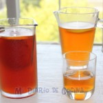

tostadas con queso cabra, salmón ahumado y aguacate
Ingredientes
- 4 rebanadas de pan Bimbo® (blanco o integral en rebanadas / Sliced White or Whole Wheat Variety)
- 1 Aguacate de México
- Sal a gusto
- 4 láminas de salmón ahumado
- 1 cucharada de ciboulette
- 1 cucharadita de salsa Tabasco
Preparacion
- Tostar 4 unidades de pan de molde Bimbo.
- Moler el aguacate y sazonar con sal
- Colocar una porción de queso cabra en cada tostada, luego una lámina de salmón ahumado, enseguida una porción de aguacate, y decorar con ciboulette. Si gusta, también puede colocar unas gotas de salsa Tabasco encima.